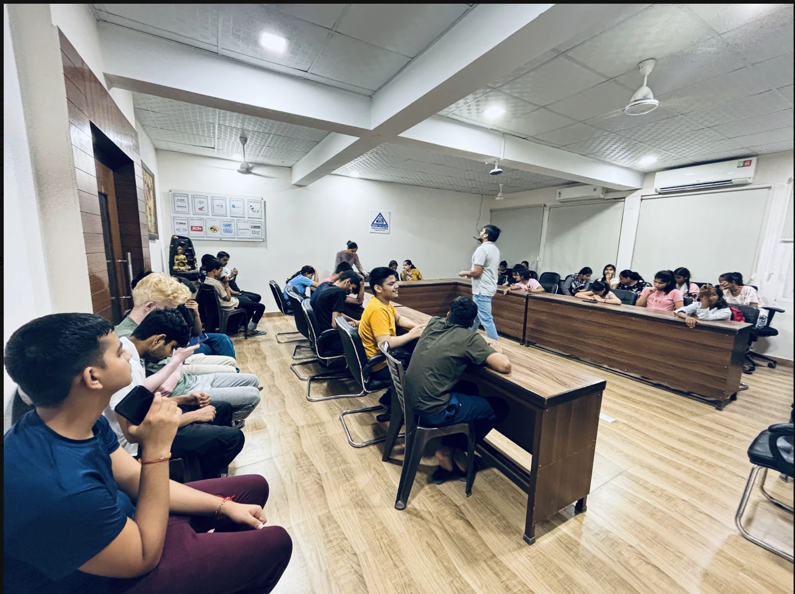
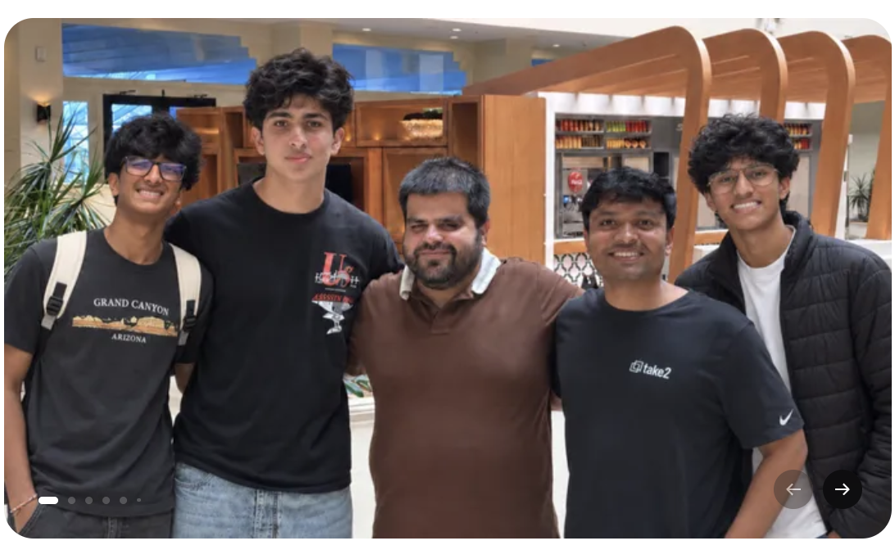
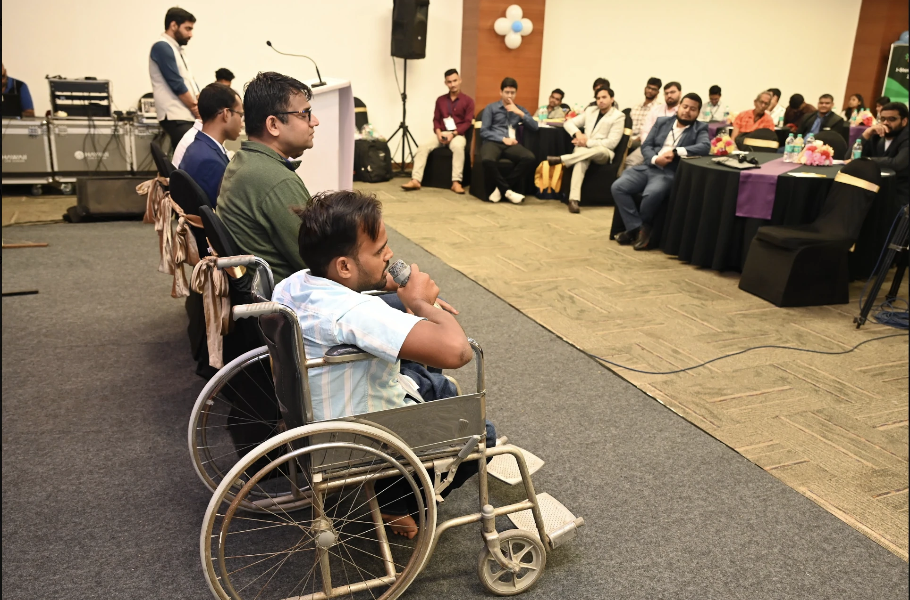
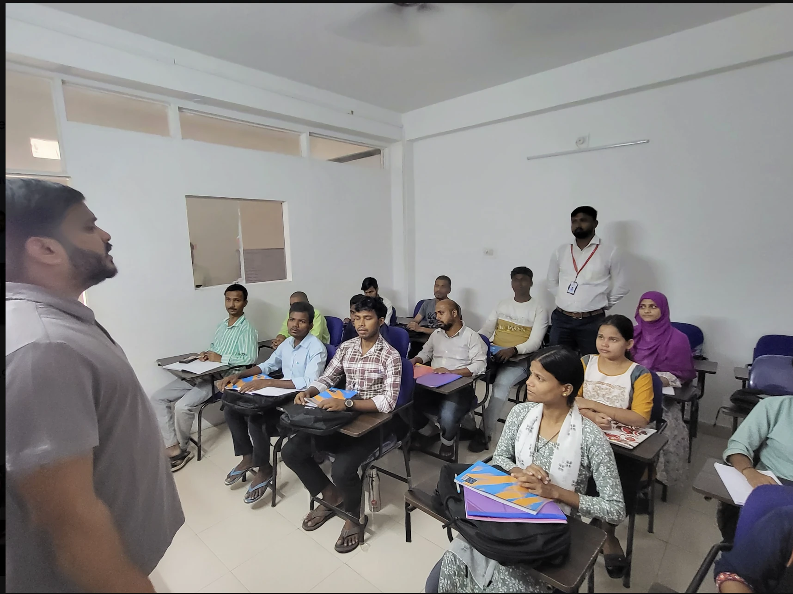
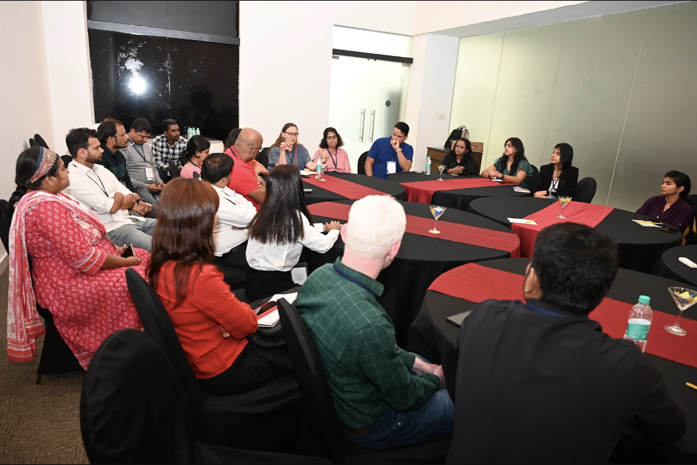
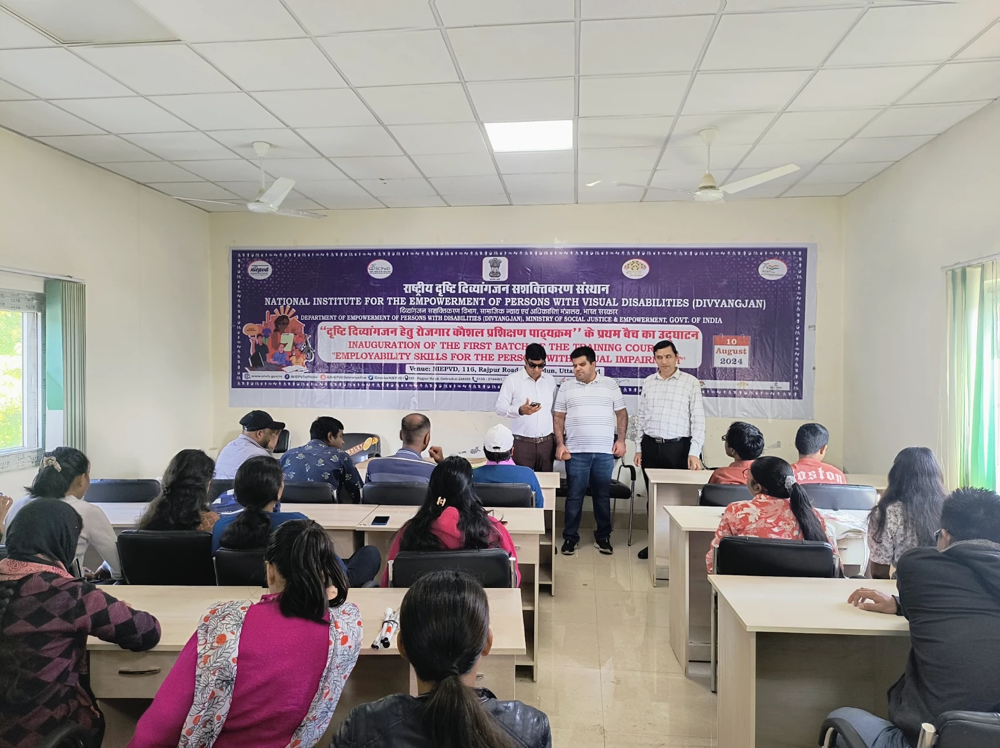
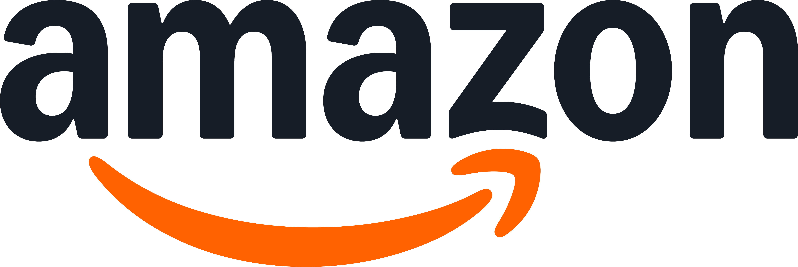
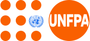
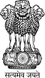

50,000+people with disabilities impacted
Jyotirgamya training
We trained trainers under Jyotirgamya with Saksham Trust, Samarthanam Trust and NAB Delhi.
70+ nonprofit partners across 15 Indian states
Our impact
Figures from our suicide-prevention and disability-inclusion programmes.
Our reach
Disability inclusion
Neorons has worked with I-Stem on disability inclusion. I-Stem is a disability-led organisation working on accessible technology, learning and employment.

Community programmes
The following figures cover Neorons’ education, employment and information-access programmes across 15 Indian states.

50,000+people with disabilities impacted
We trained trainers under Jyotirgamya with Saksham Trust, Samarthanam Trust and NAB Delhi.
70+ nonprofit partners across 15 Indian states

100+direct job placements
Annual hackathons, career fairs and networking events with Google, Morgan Stanley, Microsoft and Goldman Sachs involved 1,000+ professionals and students with disabilities.

2.3m+pages made accessible
We converted Telangana and Karnataka STEM curricula and JEE materials into accessible formats with Intel, Bosch and D. E. Shaw. This work generated $100,000+ in community earnings.

14,000+users accessing and applying for government schemes
NClude helps users access and apply for government schemes. Our platform delivered 105,000+ career-discovery and information-access sessions.

18,000+jobs accessed
7,500+ users accessed and applied for roles with inclusive employers and government openings.
$150,000+in collective earnings across our inclusion work
Figures describe programme-wide results and may overlap. Photo credits ↗
Campus programmes
Inclusive programmes across 23 IIT and 22 IIM campuses.
United States · 119th Congress
Neorons advocates for these five federal proposals on youth and campus suicide prevention. All remain introduced bills in committee.
| Bill | Proposed measures | Status |
|---|---|---|
| H.R. 2630Youth Suicide Prevention Research Act | Expand suicide-prevention research to include adverse childhood experiences and childhood toxic stress. | Introduced In committee |
| H.R. 5482Prevent Youth Suicide Act | Require school protocols for suicide prevention, postvention, and trauma-informed care. | Introduced In committee |
| H.R. 7092RAYS Act | Put mental-health and suicide-prevention contacts on secondary-school student IDs, with online access where IDs are not issued. | Introduced In committee |
| H.R. 8989Evidence-Based Youth Suicide Prevention Act of 2026 | Support the development and evaluation of evidence-based suicide-prevention programmes for children and adolescents. | Introduced In committee |
| H.R. 8657Campus Lifeline Act of 2026 | Strengthen student-led mental-health initiatives and awareness of crisis support on college campuses. | Introduced In committee |
Legislative status checked November 17, 2026. Each bill links to its official text and status record.




